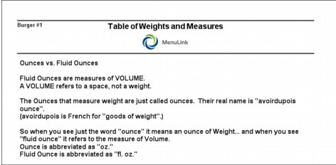
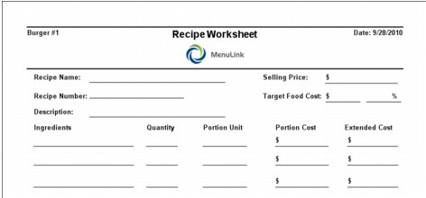

Conversions The Conversions button in the Recipes Switchboard previews the Table of Weights and Measures report. This report is useful when creating recipes because it gives you information on converting a unit of measure to another unit of measure (e.g., gallons to ounces). This report also gives you the weights and measures to standard bottle sizes, can sizes and pan sizes. To Print the Table of Weights and Measures report: 1. On the Recipes Switchboard, click Conversions to access the Table of Weights and Measures report.  2. You can read the report on-screen or print the report as you would any other report. 3. To exit the preview screen, click Close. Recipe Worksheets You can print a blank recipe worksheet from this screen. This worksheet is used in creating new recipes. To Print the Recipe Worksheet: 1. On the Recipes Switchboard, click Worksheets. A blank Recipe Worksheet appears.  2. You can print the worksheet as you would any other report. 3. To exit the preview screen, click Close.